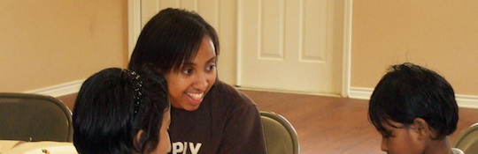

Faith Driven
People of faith working together to provide hope for generations

Service Driven
Catholic Charities does so much, for so many, with so little
Forward Driven
Catholic Charities is the community leader that makes an impact
News and Events
- May is National Foster Care Month!
We would love for you to help us get an early start on spreading awareness! - Catholic Charities 100th Birthday Mass
Wednesday, March 17, 2010 - 10:00 AM
Come Celebrate our 100th Birthday and 100 years of service with Mass at St. Patrick's Cathedral. - Grand Opening of the Fischer Family Campus
Friday, April 9, 2010 - 10:00 AM - 2:00 PM
Come visit our brand new headquarters and see how we will be able to better serve the community for the next 100 years.